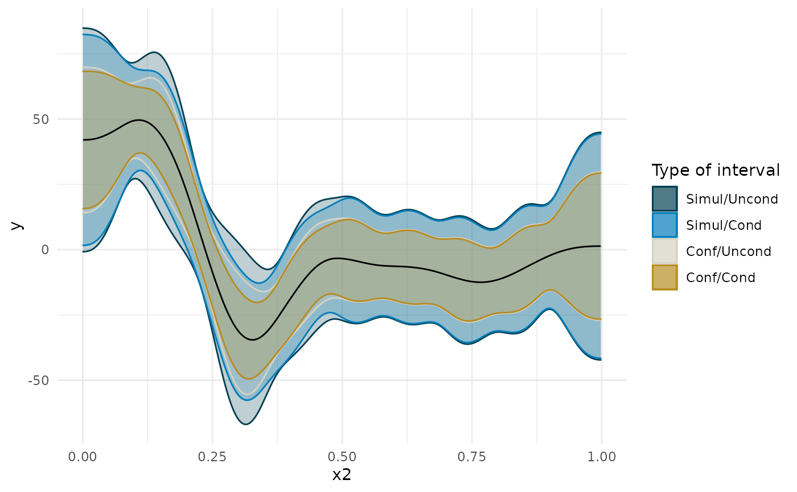
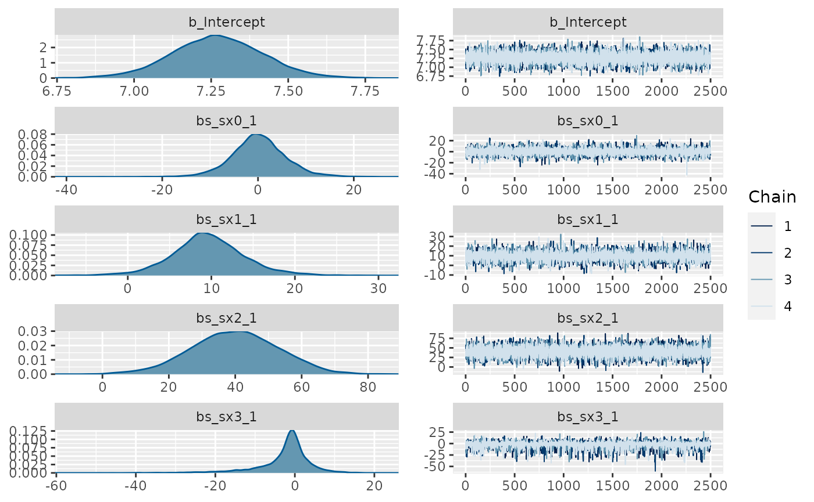
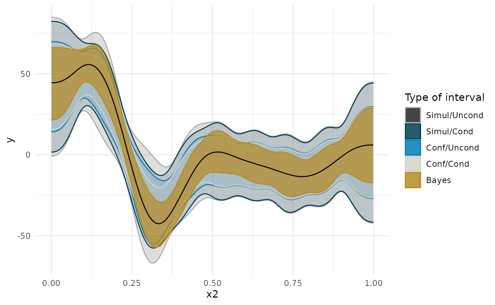
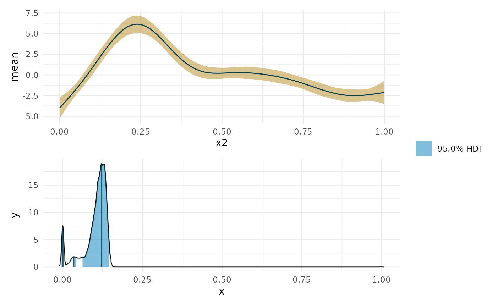
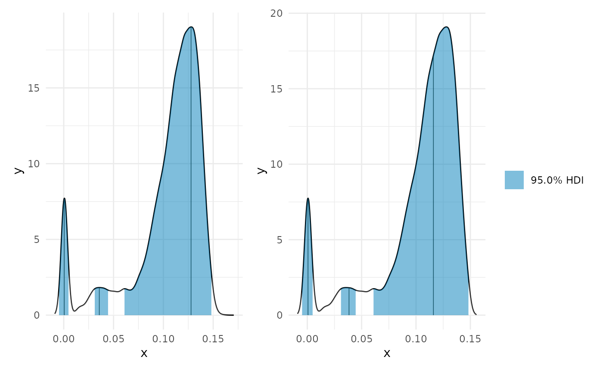
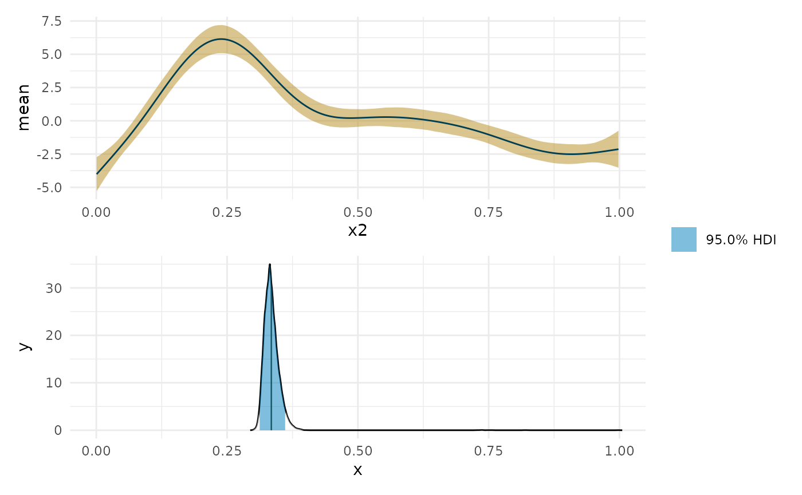
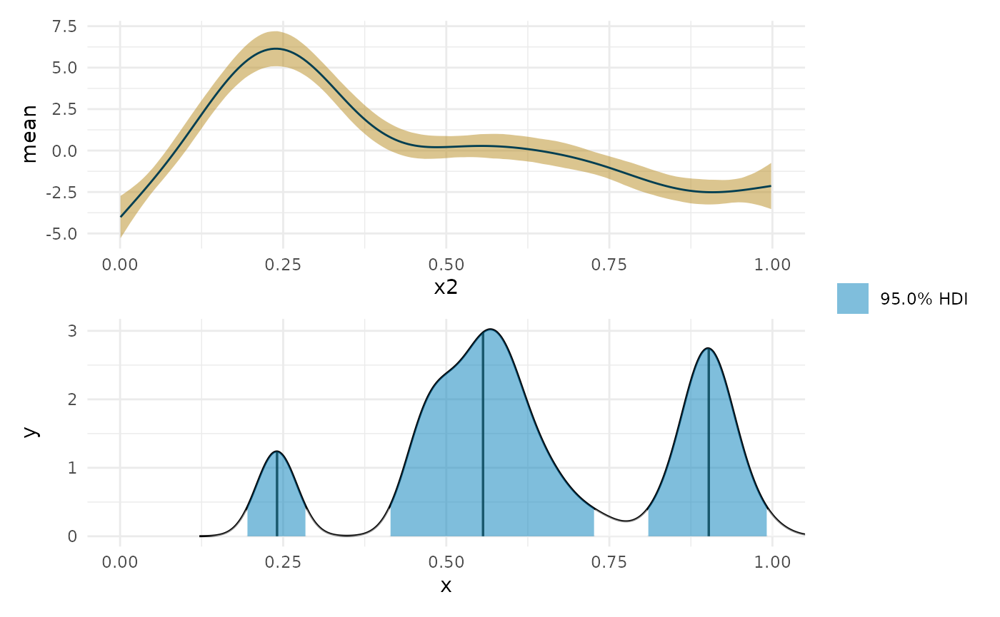
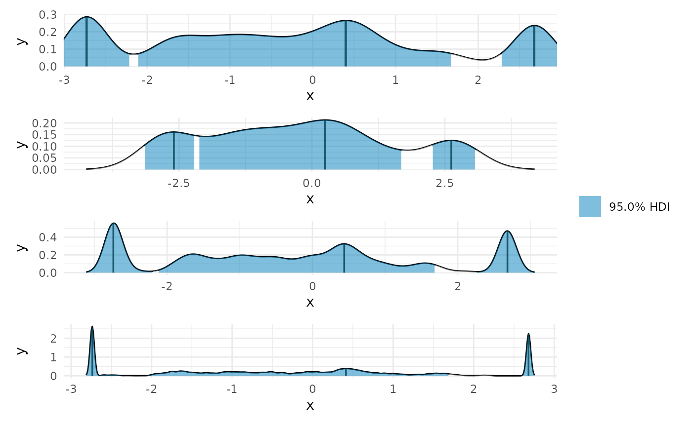
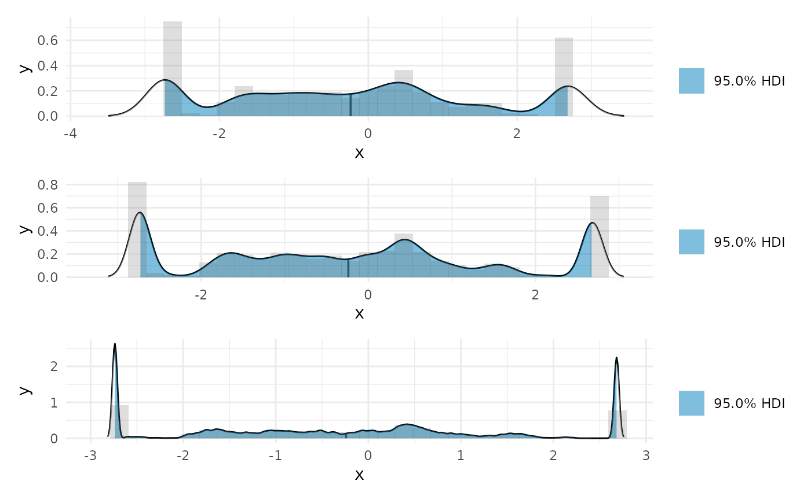

Finding Plateaus
finding-plateaus.RmdAlong with this package, this vignette uses the gratia and mgcv packages for comparsons. I’ll start with the first example from mgcv.
# library(curvish) library(mgcv) #> Loading required package: nlme #> This is mgcv 1.8-31. For overview type 'help("mgcv-package")'. library(gratia) library(ggplot2) #Below from ?gam set.seed(2) ## simulate some data... d <- gamSim(1,n=200,dist="normal",scale=2) fit <- gam(y~s(x0)+s(x1)+s(x2)+s(x3),data=d, method = 'REML') summary(fit) par(mar=c(1,1,1,1)) plot(fit,pages=1,residuals=TRUE) ## show partial residuals
plot(fit,pages=1,seWithMean=TRUE) ## `with intercept' CIs
## run some basic model checks, including checking ## smoothing basis dimensions... gam.check(fit)
#> Gu & Wahba 4 term additive model
#>
#> Family: gaussian
#> Link function: identity
#>
#> Formula:
#> y ~ s(x0) + s(x1) + s(x2) + s(x3)
#>
#> Parametric coefficients:
#> Estimate Std. Error t value Pr(>|t|)
#> (Intercept) 7.2696 0.1456 49.94 <2e-16 ***
#> ---
#> Signif. codes: 0 '***' 0.001 '**' 0.01 '*' 0.05 '.' 0.1 ' ' 1
#>
#> Approximate significance of smooth terms:
#> edf Ref.df F p-value
#> s(x0) 3.058 3.788 5.881 0.000277 ***
#> s(x1) 2.597 3.224 44.684 < 2e-16 ***
#> s(x2) 7.782 8.614 32.919 < 2e-16 ***
#> s(x3) 1.001 1.001 0.538 0.464311
#> ---
#> Signif. codes: 0 '***' 0.001 '**' 0.01 '*' 0.05 '.' 0.1 ' ' 1
#>
#> R-sq.(adj) = 0.687 Deviance explained = 70.9%
#> -REML = 446.46 Scale est. = 4.2373 n = 200
#>
#> Method: REML Optimizer: outer newton
#> full convergence after 6 iterations.
#> Gradient range [-0.000243307,0.0001095225]
#> (score 446.4563 & scale 4.237334).
#> Hessian positive definite, eigenvalue range [0.000243146,97.63853].
#> Model rank = 37 / 37
#>
#> Basis dimension (k) checking results. Low p-value (k-index<1) may
#> indicate that k is too low, especially if edf is close to k'.
#>
#> k' edf k-index p-value
#> s(x0) 9.00 3.06 1.11 0.89
#> s(x1) 9.00 2.60 1.01 0.52
#> s(x2) 9.00 7.78 1.10 0.92
#> s(x3) 9.00 1.00 0.91 0.07 .
#> ---
#> Signif. codes: 0 '***' 0.001 '**' 0.01 '*' 0.05 '.' 0.1 ' ' 1Derivatives
eps = 1e-07 res = 200 fit <- gam(y~s(x2),data=d, method = 'REML') deriv_su <- gratia::derivatives(fit, term = 'x2', n = res, eps = eps, level = .95, interval = 'simultaneous', unconditional = TRUE, n_sim = 10000) deriv_sc <- gratia::derivatives(fit, term = 'x2', n = res, eps = eps, level = .95, interval = 'simultaneous', unconditional = FALSE, n_sim = 10000) deriv_cu <- gratia::derivatives(fit, term = 'x2', n = res, eps = eps, level = .95, interval = 'confidence', unconditional = TRUE) deriv_cc <- gratia::derivatives(fit, term = 'x2', n = res, eps = eps, level = .95, interval = 'confidence', unconditional = FALSE)
Sources of uncertainty
I’ll start off by considering the important issue of simultaneous confidence intervals described in this blog post by the author of the gratia package. Essentially, if we are to compare, point by point, the confidence interval, we need to correct for multiple comparisons. See below for how this changes the width of the interval around the first derivative plot. Also note how making the interval unconditional on the smooth terms slightly widens it. This is to add in the uncertainty about the exact shape of the smooth.
The Bayesian method does not face this particular multiple comparison problem. I use the posterior of the derivative to compute the posterior for the difference between the derivative at a given age to the derivative at the age where the median posterior derivative is at its maximum (i.e., at [INSERT HERE] years). I then compute the 95% credible interval for that statistic at each age. If at each age 95% of the posterior falls in a certain range, then we can also be sure that 95% of the posterior across all ages falls in this range, so we are not inflating the probability that we make a mistake in deciding that this range includes the true region of steepest slope.
In the plots below, you will notice that the more sources of uncertainty we account for in the ML models (that is, the non-Bayesian models), the wider the confidence regions are. The widest interval is when we account for the multiple tests (i.e., a test at each age we’re interested in examining the derivative), and when we account for uncertainty in the exact shape of the spline. “Simul” refers to the use of simultaneous confidence intervals that account for multiple testing, whereas “Conf” refers to traditional confidence intervals. “Uncon” refers to intervals that are unconditional on the choice of shape of the spline and “Cond” refers to intervals that are conditional on the exact trajectory as estimated.
The derivative of the Bayesian model falls somewhere in the middle, and has a slightly different shape.
ggplot(deriv_su, aes(x = data, y = derivative)) + geom_ribbon(aes(ymin = lower, ymax = upper, color = 'Simul/Uncond', fill = 'Simul/Uncond'), alpha = .25) + geom_ribbon(data = deriv_sc, aes(ymin = lower, ymax = upper, color = 'Simul/Cond', fill = 'Simul/Cond'), alpha = .25) + geom_ribbon(data = deriv_cu, aes(ymin = lower, ymax = upper, color = 'Conf/Uncond', fill = 'Conf/Uncond'), alpha = .25) + geom_ribbon(data = deriv_cc, aes(ymin = lower, ymax = upper, color = 'Conf/Cond', fill = 'Conf/Cond'), alpha = .25) + scale_color_manual(breaks = c('Simul/Uncond', 'Simul/Cond', 'Conf/Uncond', 'Conf/Cond', 'Bayes'), values = c(cpal[c(1:2, 4:5)], '#000000'), name = 'Type of interval') + scale_fill_manual(breaks = c('Simul/Uncond', 'Simul/Cond', 'Conf/Uncond', 'Conf/Cond', 'Bayes'), values = c(cpal[c(1:2, 4:5)], '#000000'), name = 'Type of interval') + labs(x = 'x2', y = 'y') + geom_line() + theme_minimal()

Bayesian GAM and derivative
Using brms.
library(brms) #> Loading required package: Rcpp #> Loading 'brms' package (version 2.14.0). Useful instructions #> can be found by typing help('brms'). A more detailed introduction #> to the package is available through vignette('brms_overview'). #> #> Attaching package: 'brms' #> The following object is masked from 'package:gratia': #> #> posterior_samples #> The following objects are masked from 'package:mgcv': #> #> s, t2 #> The following object is masked from 'package:stats': #> #> ar fit_b <- brms::brm(brms::bf(y ~ s(x0) + s(x1) + s(x2) + s(x3)), data=d, chains = 4, cores = 4, iter = 4500, warmup = 2000, control = list(adapt_delta = .999, max_treedepth = 20), file = 'fit_b') summary(fit_b) #> Family: gaussian #> Links: mu = identity; sigma = identity #> Formula: y ~ s(x0) + s(x1) + s(x2) + s(x3) #> Data: d (Number of observations: 200) #> Samples: 4 chains, each with iter = 4500; warmup = 2000; thin = 1; #> total post-warmup samples = 10000 #> #> Smooth Terms: #> Estimate Est.Error l-95% CI u-95% CI Rhat Bulk_ESS Tail_ESS #> sds(sx0_1) 3.12 1.53 1.14 7.10 1.00 6636 6285 #> sds(sx1_1) 2.31 1.34 0.63 5.74 1.00 5398 5003 #> sds(sx2_1) 19.60 5.73 11.17 33.27 1.00 3839 5141 #> sds(sx3_1) 2.86 2.90 0.07 10.55 1.00 2147 4321 #> #> Population-Level Effects: #> Estimate Est.Error l-95% CI u-95% CI Rhat Bulk_ESS Tail_ESS #> Intercept 7.27 0.15 6.97 7.56 1.00 18645 6951 #> sx0_1 0.18 5.65 -10.96 11.94 1.00 7798 5872 #> sx1_1 9.61 4.41 0.86 18.91 1.00 7884 6813 #> sx2_1 39.91 13.17 13.63 65.22 1.00 9478 7320 #> sx3_1 -2.41 6.73 -20.75 8.28 1.00 4842 3150 #> #> Family Specific Parameters: #> Estimate Est.Error l-95% CI u-95% CI Rhat Bulk_ESS Tail_ESS #> sigma 2.07 0.11 1.86 2.31 1.00 11352 6515 #> #> Samples were drawn using sampling(NUTS). For each parameter, Bulk_ESS #> and Tail_ESS are effective sample size measures, and Rhat is the potential #> scale reduction factor on split chains (at convergence, Rhat = 1). plot(fit_b, ask = FALSE)

plot(brms::conditional_smooths(fit_b, smooths = 's(x2)'))
deriv_b <- curvish::derivatives(fit_b, term = 'x2', n = res, eps = eps) ggplot(deriv_su, aes(x = data, y = derivative)) + geom_ribbon(aes(ymin = lower, ymax = upper, color = 'Simul/Uncond', fill = 'Simul/Uncond'), alpha = .15) + geom_ribbon(data = deriv_sc, aes(ymin = lower, ymax = upper, color = 'Simul/Cond', fill = 'Simul/Cond'), alpha = .15) + geom_ribbon(data = deriv_cu, aes(ymin = lower, ymax = upper, color = 'Conf/Uncond', fill = 'Conf/Uncond'), alpha = .15) + geom_ribbon(data = deriv_cc, aes(ymin = lower, ymax = upper, color = 'Conf/Cond', fill = 'Conf/Cond'), alpha = .15) + geom_ribbon(data = deriv_b$deriv_posterior_summary, aes(x = x2, y = mean, ymin = l, ymax = u, color = 'Bayes', fill = 'Bayes'), alpha = .7) + geom_line(data = deriv_b$deriv_posterior_summary, aes (x = x2, y = mean)) + scale_color_manual(breaks = c('Simul/Uncond', 'Simul/Cond', 'Conf/Uncond', 'Conf/Cond', 'Bayes'), values = c('#aaaaaa', cpal[c(1:2, 4:5)]), name = 'Type of interval') + scale_fill_manual(breaks = c('Simul/Uncond', 'Simul/Cond', 'Conf/Uncond', 'Conf/Cond', 'Bayes'), values = c('#222222', cpal[c(1:2, 4:5)]), name = 'Type of interval') + labs(x = 'x2', y = 'y') + theme_minimal() #> Warning: Ignoring unknown aesthetics: y


Finding regions of difference
There are ways to do this using the gratia package and fequentist inference. An example is here. This vignette will focus on the Bayesian approach implemented in curvish.
X value for slope property
For example, you might want to find the most probably X value for where the slope is steepest (positive or negative), or closest to 0.
Max
library(patchwork) max_p <- curvish::posterior_x_at_maxy(object = fit_b, term = 'x2', n = res, eps = eps, multimodal = TRUE, prob = .95, summary_only = FALSE) max_p$param_posterior_sum #> begin end #> [1,] -0.004961324 0.004985914 #> [2,] 0.030848733 0.044774866 #> [3,] 0.060690447 0.148226143 #> attr(,"credMass") #> [1] 0.95 #> attr(,"height") #> [1] 1.667861 plot(deriv_b, deriv = FALSE) + plot(max_p) + patchwork::plot_layout(design = " A B", guides = "collect")

Two other views
You can set a constrained range, and wether to use the mode or the median within each chunk of the HPDI.
plot(max_p, range = c(0, .15)) + plot(max_p, range = c(0, .15), mode = FALSE) + patchwork::plot_layout(guides = 'collect')

Min
min_p <- curvish::posterior_x_at_miny(object = fit_b, term = 'x2', n = res, eps = eps, multimodal = FALSE, prob = .95, summary_only = FALSE) min_p$param_posterior_sum #> x2 #> lower 0.3114112 #> upper 0.3615319 #> attr(,"credMass") #> [1] 0.95 plot(deriv_b, deriv = FALSE) + coord_cartesian(x = c(0, 1)) + plot(min_p) + coord_cartesian(x = c(0, 1)) + patchwork::plot_layout(design = " A B", guides = "collect")

Near 0
zero_p <- curvish::posterior_x_at_yequalto(object = fit_b, term = 'x2', n = 200, eps = eps, value = 0, multimodal = TRUE, prob = .95, summary_only = FALSE) zero_p$param_posterior_sum #> begin end #> [1,] 0.1933673 0.2860167 #> [2,] 0.4127005 0.7284646 #> [3,] 0.8078783 0.9931770 #> attr(,"credMass") #> [1] 0.95 #> attr(,"height") #> [1] 0.3945052 plot(deriv_b, deriv = FALSE) + coord_cartesian(x = c(0, 1)) + plot(zero_p, mode = FALSE) + coord_cartesian(x = c(0, 1)) + patchwork::plot_layout(design = " A B", guides = "collect")

The question has to make sense.
set.seed(9) linear_data <- data.frame(x = rnorm(200)) linear_data$y <- linear_data$x*.5 + rnorm(200) plot(linear_data$x, linear_data$y) fit_lin <- brms::brm(brms::bf(y ~ s(x)), data=linear_data, chains = 4, cores = 4, iter = 4500, warmup = 2000, control = list(adapt_delta = .999, max_treedepth = 20), file = 'fit_lin') summary(fit_lin) #> Warning: There were 1 divergent transitions after warmup. Increasing adapt_delta #> above 0.999 may help. See http://mc-stan.org/misc/warnings.html#divergent- #> transitions-after-warmup #> Family: gaussian #> Links: mu = identity; sigma = identity #> Formula: y ~ s(x) #> Data: linear_data (Number of observations: 200) #> Samples: 4 chains, each with iter = 4500; warmup = 2000; thin = 1; #> total post-warmup samples = 10000 #> #> Smooth Terms: #> Estimate Est.Error l-95% CI u-95% CI Rhat Bulk_ESS Tail_ESS #> sds(sx_1) 0.70 0.71 0.02 2.69 1.00 2793 3867 #> #> Population-Level Effects: #> Estimate Est.Error l-95% CI u-95% CI Rhat Bulk_ESS Tail_ESS #> Intercept 0.02 0.07 -0.11 0.15 1.00 9672 7314 #> sx_1 2.92 1.82 -1.44 6.17 1.00 3521 3281 #> #> Family Specific Parameters: #> Estimate Est.Error l-95% CI u-95% CI Rhat Bulk_ESS Tail_ESS #> sigma 0.99 0.05 0.90 1.09 1.00 10613 7756 #> #> Samples were drawn using sampling(NUTS). For each parameter, Bulk_ESS #> and Tail_ESS are effective sample size measures, and Rhat is the potential #> scale reduction factor on split chains (at convergence, Rhat = 1). plot(fit_lin, ask = FALSE)
plot(conditional_smooths(fit_lin, smooths = 's(x)'))

deriv_lin <- curvish::derivatives(fit_lin, term = 's(x)', n = res, eps = eps) plot(deriv_lin)

plot(deriv_lin, robust = TRUE)
plot(deriv_lin, deriv = FALSE)
What’s the maximum slope along a line?
max_lin <- curvish::posterior_x_at_maxy(fit_lin, term = 'x', n = res, eps = eps, adjust = 1) plot(deriv_lin, deriv = FALSE) + coord_cartesian(x = range(linear_data$x)) + plot(max_lin) + coord_cartesian(x = range(linear_data$x)) + patchwork::plot_layout(ncol = 1)
plot(max_lin) + coord_cartesian(x = range(linear_data$x)) + plot(max_lin, adjust = 2) + plot(max_lin, adjust = .5) + plot(max_lin, adjust = .1) + patchwork::plot_layout(guides = 'collect', ncol = 1) #> Warning in plot.curvish.param(max_lin, adjust = 2): Adjusting density bandwidth #> to be different from that used to compute the HPDI. #> Warning in plot.curvish.param(max_lin, adjust = 0.5): Adjusting density #> bandwidth to be different from that used to compute the HPDI. #> Warning in plot.curvish.param(max_lin, adjust = 0.1): Adjusting density #> bandwidth to be different from that used to compute the HPDI.

Clearly the correct answer is that the entire curve is of maximum slope, but the posterior we derive incorrectly excludes a portion, by necessity. This can be understood, perhaps, as an instance of model misspecification. One should never expect to get the right answer from the wrong question.
zero_lin <- curvish::posterior_x_at_yequalto(fit_lin, term = 'x', n = res, eps = eps, value = 0) #> Warning in FUN(newX[, i], ...): More than one point matched. Sampling one at #> random. plot(deriv_lin, deriv = FALSE) + coord_cartesian(x = range(fit_lin$data$x)) + plot(zero_lin) + coord_cartesian(x = range(fit_lin$data$x)) + patchwork::plot_layout(ncol = 1)
Interestingly we can see that it is most likely to be 0 where we have the least data, and least likely where we have the most data.
Finally, consider using the histogram overlay to check the density plots.
max_lin_uni <- curvish::posterior_x_at_maxy(fit_lin, term = 'x', n = res, eps = eps, multimodal = FALSE) plot(max_lin_uni, histogram = TRUE, adjust = 1) + plot(max_lin_uni, histogram = TRUE, adjust = .5) + plot(max_lin_uni, histogram = TRUE, adjust = .1) + patchwork::plot_layout(ncol = 1) #> `stat_bin()` using `bins = 30`. Pick better value with `binwidth`. #> `stat_bin()` using `bins = 30`. Pick better value with `binwidth`. #> `stat_bin()` using `bins = 30`. Pick better value with `binwidth`.

Regions along the slope
deriv_b2 <- curvish::derivatives(fit_b, term = 'x2', n = res, eps = eps, deriv_posterior = TRUE, prob = .95, prob_outer = .999) plot(deriv_b2, deriv = TRUE, outer = TRUE)
ap <- deriv_b2$deriv_posterior onoff_mat <- apply(ap, 2, function(x) { ps <- c(pGT = mean(x > 0), pLT = mean(x < 0)) C <- c(1, -1)[which(ps == max(ps))] # is it confidently above or below 0 S <- min(ps) nS <- min(c(sum(x > 0), sum(x < 0))) c(ps, C = C, S = S, nS = nS) }) total_type_S_prob <- sum(onoff_mat['nS',])/length(ap) confident_type_S_prob <- sum(onoff_mat['nS', onoff_mat['S',] < .05])/length(ap[, onoff_mat['S',] < .05]) confidence_regions <- onoff_mat['C',] confidence_regions[onoff_mat['S', ] > .05] <- 0 region_data <- cbind(deriv_b2$deriv_posterior_summary, region = confidence_regions, `Confidence Region` = factor(confidence_regions, levels = c(1, 0, -1), labels = c('GT', '-', 'LT'))) blocks <- curvish:::contiguous_zeros(region_data, colname = 'region', indexcol = 'x2') region_data$region_group <- blocks$index plot(deriv_b2, deriv = TRUE, outer = TRUE) + geom_line(data = region_data, aes(color = `Confidence Region`, group = region_group)) + scale_color_manual(breaks = c('GT', '-', 'LT'), values = curvish:::a_pal()[c(2,1,5)])
message(sprintf('P(Type-S) = %0.1f%% in confidence regions.', confident_type_S_prob*100)) #> P(Type-S) = 0.8% in confidence regions. blocks$block_lengths #> n mean is_zero start end #> 0 46 1 FALSE 0.0006632213 0.2262061 #> 1 5 0 TRUE 0.2312181928 0.2512665 #> 2 38 -1 FALSE 0.2562785158 0.4417249 #> 3 48 0 TRUE 0.4467369704 0.6823040 #> 4 30 -1 FALSE 0.6873160711 0.8326659 #> 5 33 0 TRUE 0.8376780090 0.9980641
Coming up
Find the posterior of differences from various points in the curve, or credible intervals for differences along arbitrary values.
Also, combine objects like posteriors for max slopes and the slopes themselves to make plots of regions of the curve that have certain properties.
deriv1_age_at_max_post <- c_smooths_1_sample_data[, list('max_age' = Age[which(deriv1 == max(deriv1))]), by = 'sample__'] age_at_max_med_deriv <- deriv1_post_summary[deriv1 == max(deriv1), Age] deriv1_diff_from_max_post <- c_smooths_1_sample_data[, diff_from_max := deriv1 - deriv1[Age == age_at_max_med_deriv], by = 'sample__'] deriv1_diff_from_max_post_summary <- deriv1_diff_from_max_post[, list('diff_from_max' = median(diff_from_max), 'lower' = quantile(diff_from_max, probs = .025), 'upper' = quantile(diff_from_max, probs = .975)), by = 'Age'] deriv1_diff_from_max_post_summary[, compared_to_max := case_when(upper < 0 ~ 'less_steep', lower > 0 ~ 'steeper', TRUE ~ 'as_steep')] deriv1_post_summary <- deriv1_post_summary[deriv1_diff_from_max_post_summary[, .(Age, compared_to_max)], on = 'Age']